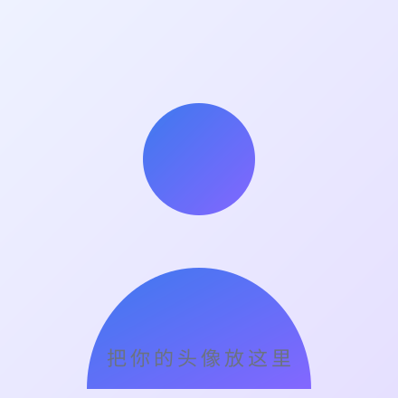

跳到主要内容
再也的小站
深色
首页
文章
关于
游戏
测试

写作 · 记录 · 分享
再也
把想法写下来，让日子慢慢清晰。
GitHub
/
关于我
↗
归档
生活
学习
工作
小叙
闲谈
感悟
最近文章
全部文章
→
2026-10-18
从一个空仓库开始：这个站是怎么搭起来的
↗
2026-10-12
写作是思考的副产品
↗
2026-10-03
我的极简工具清单
↗
2024-03-03
3、蓝桥杯嵌入式—HAL库-按键单击
↗